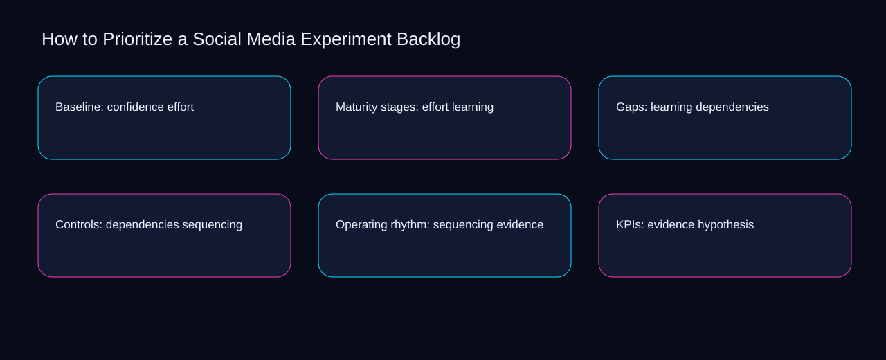

The central prioritize a social media experiment backlog decision is where to place the boundary between backlog and confidence. A bounded method for turning prioritize a social media experiment backlog into an owned, reviewable operating practice. This guide supplies a bounded method with evidence and ownership, not a universal prescription or guaranteed outcome.
Baseline: confidence effort
Place baseline: confidence effort inside a bounded scenario involving hypothesis, backlog, and a named reviewer. Define the artifact, owner, acceptance condition, and excluded work. Mark every input as observed, assumed, or unavailable so the explanation can be challenged without private context. Inspect confidence, effort, learning, dependencies, sequencing in the topic-specific walkthrough. How to Prioritize a Social Media Experiment Backlog applies operating model to baseline; the scope memo records constraint-to-action with signal-to-diagnosis. A priority remains provisional until hypothesis survives the backlog review.
Baseline: confidence effort begins by separating effort from learning. Compare a normal path with an exception path. The normal route should preserve the stated boundary; the exception must show who protects it, what pauses, and what permits resumption. Inspect dependencies, sequencing, evidence, hypothesis, backlog in the topic-specific walkthrough. How to Prioritize a Social Media Experiment Backlog applies operating model to baseline; the boundary map records constraint-to-action with signal-to-diagnosis. Keep the rejected option beside effort so another operator understands the learning choice.
causal analysis checkpoint
A review of baseline: confidence effort should expose sequencing, evidence, and the decision they inform. Trace the causal chain from the first signal to the recorded outcome. Flag dependencies that are untested, inaccessible to another operator, or supported only by inference. Inspect hypothesis, backlog, confidence, effort, learning in the topic-specific walkthrough. How to Prioritize a Social Media Experiment Backlog applies operating model to baseline; the observation log records constraint-to-action with signal-to-diagnosis. Date the sequencing evidence and name who will verify evidence.
Maturity stages: effort learning
Reopen maturity stages: effort learning whenever sequencing changes the accepted evidence boundary. Ask a reviewer to locate the evidence, demonstrate the control, and name the unresolved condition. Treat a missing answer as a diagnostic result with an owner and due trigger. Inspect hypothesis, backlog, confidence, effort, learning in the topic-specific walkthrough. How to Prioritize a Social Media Experiment Backlog applies operating model to maturity stages; the assumption register records constraint-to-action with signal-to-diagnosis. The record closes when sequencing has an owner and evidence has an observable trigger.
Use backlog as the entry condition for maturity stages: effort learning and confidence as its exit evidence. Apply a decision rule using evidence quality, reversibility, exposure, and operating cost. Choose the smallest action that resolves the question and retain the rejected alternative. Inspect effort, learning, dependencies, sequencing, evidence in the topic-specific walkthrough. How to Prioritize a Social Media Experiment Backlog applies operating model to maturity stages; the decision brief records constraint-to-action with signal-to-diagnosis. If evidence breaks between backlog and confidence, return to diagnosis instead of polishing the artifact.
implementation instruction checkpoint
Place maturity stages: effort learning inside a bounded scenario involving learning, dependencies, and a named reviewer. Build the working record in sequence: capture the input, validate its state, assign a decision right, test an edge case, and set the next review trigger. Inspect sequencing, evidence, hypothesis, backlog, confidence in the topic-specific walkthrough. How to Prioritize a Social Media Experiment Backlog applies operating model to maturity stages; the implementation ticket records constraint-to-action with signal-to-diagnosis. A priority remains provisional until learning survives the dependencies review.
Gaps: learning dependencies
Gaps: learning dependencies begins by separating sequencing from evidence. Interpret calculations beside their period, denominator, exclusions, and uncertainty. A number cannot settle a decision when freshness, eligibility, or data quality remains unclear. Inspect hypothesis, backlog, confidence, effort, learning in the topic-specific walkthrough. How to Prioritize a Social Media Experiment Backlog applies operating model to gaps; the calculation sheet records constraint-to-action with signal-to-diagnosis. Keep the rejected option beside sequencing so another operator understands the evidence choice.
A review of gaps: learning dependencies should expose backlog, confidence, and the decision they inform. Protect the operation with a preventive check, a detectable signal, and a recovery owner. Define the stop condition before the team encounters the exception. Inspect effort, learning, dependencies, sequencing, evidence in the topic-specific walkthrough. How to Prioritize a Social Media Experiment Backlog applies operating model to gaps; the control register records constraint-to-action with signal-to-diagnosis. Date the backlog evidence and name who will verify confidence.
exception handling checkpoint
Reopen gaps: learning dependencies whenever learning changes the accepted dependencies boundary. Document exceptions separately from defaults. Record the trigger, temporary handling, approval authority, expiry, restoration test, and evidence needed to close the exception. Inspect sequencing, evidence, hypothesis, backlog, confidence in the topic-specific walkthrough. How to Prioritize a Social Media Experiment Backlog applies operating model to gaps; the exception note records constraint-to-action with signal-to-diagnosis. The record closes when learning has an owner and dependencies has an observable trigger.

Controls: dependencies sequencing
Use effort as the entry condition for controls: dependencies sequencing and learning as its exit evidence. Rank actions by decision value, dependency, reversibility, and effort. Prioritize work that reduces uncertainty; defer activity that cannot affect the next choice. Inspect dependencies, sequencing, evidence, hypothesis, backlog in the topic-specific walkthrough. How to Prioritize a Social Media Experiment Backlog applies operating model to controls; the priority queue records constraint-to-action with signal-to-diagnosis. If evidence breaks between effort and learning, return to diagnosis instead of polishing the artifact.
Place controls: dependencies sequencing inside a bounded scenario involving sequencing, evidence, and a named reviewer. Use each reference for a narrow claim function. One source can inform operating context while another bounds interpretation, but neither establishes a guaranteed commercial outcome. Inspect hypothesis, backlog, confidence, effort, learning in the topic-specific walkthrough. How to Prioritize a Social Media Experiment Backlog applies operating model to controls; the source ledger records constraint-to-action with signal-to-diagnosis. A priority remains provisional until sequencing survives the evidence review.
measurement guidance checkpoint
Controls: dependencies sequencing begins by separating backlog from confidence. Pair a leading signal with an outcome signal and a data-quality check. Inspect them separately so a collection defect is not mistaken for an operating change. Inspect effort, learning, dependencies, sequencing, evidence in the topic-specific walkthrough. How to Prioritize a Social Media Experiment Backlog applies operating model to controls; the measurement card records constraint-to-action with signal-to-diagnosis. Keep the rejected option beside backlog so another operator understands the confidence choice.
Operating rhythm: sequencing evidence
A review of operating rhythm: sequencing evidence should expose learning, dependencies, and the decision they inform. Set cadence according to change risk rather than calendar habit. Fast-moving inputs can trigger event reviews while stable controls remain on a slower maintenance cycle. Inspect sequencing, evidence, hypothesis, backlog, confidence in the topic-specific walkthrough. How to Prioritize a Social Media Experiment Backlog applies operating model to operating rhythm; the cadence calendar records constraint-to-action with signal-to-diagnosis. Date the learning evidence and name who will verify dependencies.
Reopen operating rhythm: sequencing evidence whenever evidence changes the accepted hypothesis boundary. Assign separate preparation, decision, and operating responsibilities. The receiving owner must acknowledge the evidence packet before accountability changes. Inspect backlog, confidence, effort, learning, dependencies in the topic-specific walkthrough. How to Prioritize a Social Media Experiment Backlog applies operating model to operating rhythm; the ownership matrix records constraint-to-action with signal-to-diagnosis. The record closes when evidence has an owner and hypothesis has an observable trigger.
escalation condition checkpoint
Use confidence as the entry condition for operating rhythm: sequencing evidence and effort as its exit evidence. Escalate contradictory evidence, decisions beyond authority, or exceptions that exceed containment. Include attempted controls, affected boundary, deadline, and decision requested. Inspect learning, dependencies, sequencing, evidence, hypothesis in the topic-specific walkthrough. How to Prioritize a Social Media Experiment Backlog applies operating model to operating rhythm; the escalation packet records constraint-to-action with signal-to-diagnosis. If evidence breaks between confidence and effort, return to diagnosis instead of polishing the artifact.
KPIs: evidence hypothesis
Place kpis: evidence hypothesis inside a bounded scenario involving backlog, confidence, and a named reviewer. Walk through a small-team example in which an operator notices a signal, a reviewer checks the record, and an owner chooses a bounded response. Repeat with a failure path. Inspect effort, learning, dependencies, sequencing, evidence in the topic-specific walkthrough. How to Prioritize a Social Media Experiment Backlog applies operating model to KPIs; the scenario transcript records constraint-to-action with signal-to-diagnosis. A priority remains provisional until backlog survives the confidence review.
KPIs: evidence hypothesis begins by separating learning from dependencies. State the limitation directly. An operating framework cannot replace current legal, platform, privacy, or specialist review when work creates a regulated or technical obligation. Inspect sequencing, evidence, hypothesis, backlog, confidence in the topic-specific walkthrough. How to Prioritize a Social Media Experiment Backlog applies operating model to KPIs; the limitation note records constraint-to-action with signal-to-diagnosis. Keep the rejected option beside learning so another operator understands the dependencies choice.
tradeoff checkpoint
A review of kpis: evidence hypothesis should expose evidence, hypothesis, and the decision they inform. Expose the tradeoff before acting. Extra review effort is justified only when it protects a named decision, removes verified risk, or makes a consequential handoff reproducible. Inspect backlog, confidence, effort, learning, dependencies in the topic-specific walkthrough. How to Prioritize a Social Media Experiment Backlog applies operating model to KPIs; the tradeoff record records constraint-to-action with signal-to-diagnosis. Date the evidence evidence and name who will verify hypothesis.
Verification: hypothesis backlog
Reopen verification: hypothesis backlog whenever confidence changes the accepted effort boundary. Reject artifact collection without decision use. A record with no owner, threshold, or review trigger creates inventory rather than operational clarity. Inspect learning, dependencies, sequencing, evidence, hypothesis in the topic-specific walkthrough. How to Prioritize a Social Media Experiment Backlog applies operating model to verification; the anti-pattern review records constraint-to-action with signal-to-diagnosis. The record closes when confidence has an owner and effort has an observable trigger.
Use dependencies as the entry condition for verification: hypothesis backlog and sequencing as its exit evidence. Verify with a second operator who did not author the record. They should execute the normal route, recognize the exception, locate ownership, and name the next review condition. Inspect evidence, hypothesis, backlog, confidence, effort in the topic-specific walkthrough. How to Prioritize a Social Media Experiment Backlog applies operating model to verification; the verification receipt records constraint-to-action with signal-to-diagnosis. If evidence breaks between dependencies and sequencing, return to diagnosis instead of polishing the artifact.
explanation checkpoint
Place verification: hypothesis backlog inside a bounded scenario involving hypothesis, backlog, and a named reviewer. Reconcile the maintenance history against the current boundary. Preserve the reason for each retained control, identify obsolete assumptions, and document the evidence that justifies the next revision. Inspect confidence, effort, learning, dependencies, sequencing in the topic-specific walkthrough. How to Prioritize a Social Media Experiment Backlog applies operating model to verification; the dependency map records constraint-to-action with signal-to-diagnosis. A priority remains provisional until hypothesis survives the backlog review.
Maintenance: backlog confidence
Maintenance: backlog confidence begins by separating hypothesis from backlog. Contrast the current operating state with the intended state. Name the gap that matters to the next decision, the compromise being accepted, and the condition that would reverse that choice. Inspect confidence, effort, learning, dependencies, sequencing in the topic-specific walkthrough. How to Prioritize a Social Media Experiment Backlog applies operating model to maintenance; the handoff acknowledgement records constraint-to-action with signal-to-diagnosis. Keep the rejected option beside hypothesis so another operator understands the backlog choice.
A review of maintenance: backlog confidence should expose effort, learning, and the decision they inform. Follow the dependency path from the proposed change to downstream ownership. Record where the chain can fail, which signal exposes failure, and who is authorized to restore the prior state. Inspect dependencies, sequencing, evidence, hypothesis, backlog in the topic-specific walkthrough. How to Prioritize a Social Media Experiment Backlog applies operating model to maintenance; the maintenance trigger records constraint-to-action with signal-to-diagnosis. Date the effort evidence and name who will verify learning.
diagnostic prompt checkpoint
Reopen maintenance: backlog confidence whenever sequencing changes the accepted evidence boundary. Run an end-state diagnostic with a fresh reviewer. Ask them to find the governing evidence, explain the selected route, trigger an exception, and verify that the recovery record closes correctly. Inspect hypothesis, backlog, confidence, effort, learning in the topic-specific walkthrough. How to Prioritize a Social Media Experiment Backlog applies operating model to maintenance; the change history records constraint-to-action with signal-to-diagnosis. The record closes when sequencing has an owner and evidence has an observable trigger.
Reference boundaries
For How to Prioritize a Social Media Experiment Backlog, this private guide uses Marketing and sales from U.S. Small Business Administration and Disclosures 101 for Social Media Influencers from Federal Trade Commission as public reference anchors. The signal-to-diagnosis reading connects hypothesis, backlog, confidence, effort; the evidence-to-threshold boundary covers learning, dependencies, sequencing, evidence. Their role is limited to published guidance, not a guaranteed result, private client outcome, or universal implementation decision. Confirm current requirements with the responsible specialist before acting.
Close the operating loop
Revisit the hypothesis signal, backlog outcome, and confidence quality check before changing the prioritize a social media experiment backlog rule. Preserve limitations and rejected options for the next reviewer. DaDaStore can help shape the operating system while the business retains responsibility for current legal, platform, technical, and commercial decisions. The C-social-media-strategy-3 handoff records hypothesis, backlog, confidence, effort, learning, dependencies, sequencing, evidence as topic-specific review inputs.